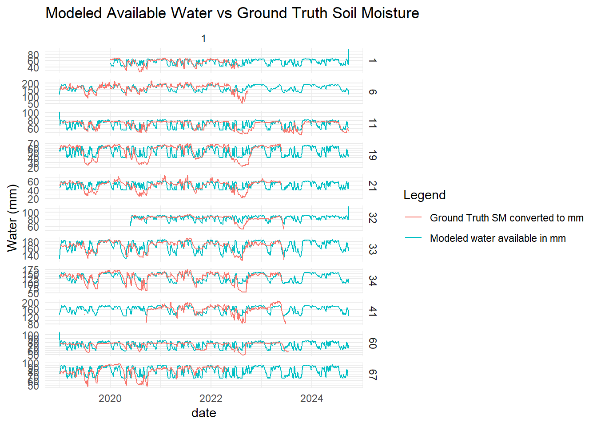
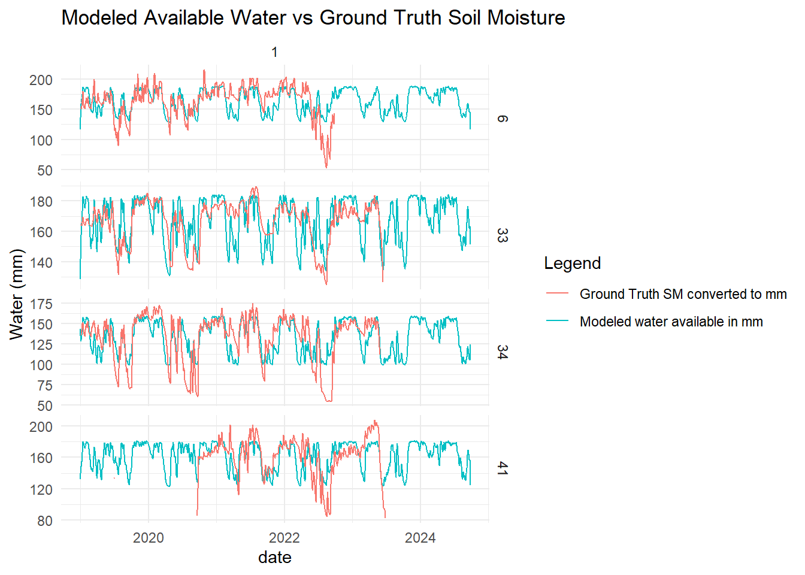
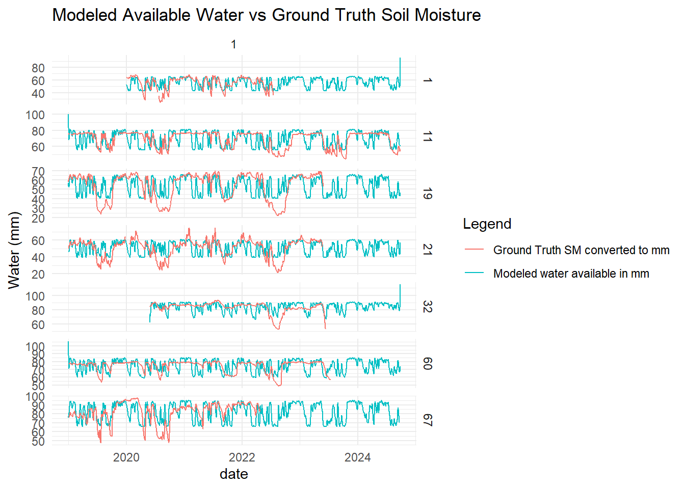

# load librarieslibrary(here)library(stringr)library(ggplot2)library(zoo)library(purrr)library(dplyr)library(tidyr)library(readr)library(magrittr)library(lubridate)library(sf)library(GA)library(parallel)library(yardstick)library(tmap)# Source Modules & Helperssource(here("scripts","helper_swb.R"), local =FALSE)source(here("scripts","db_interface.R"), local =FALSE)
Use of volumetric ground truth data
In this section we will be calibrating SWB model soil parameters using volumetric soil moisture data as ground truth.
We must consider that from the 100 locations available at the moment in the ground truth dataset only 11 of those locations register this variable.
One important consideration to be made is the fact that volumetric soil moisture and available water content are different conceptually and we need to account for that.
The former refers to the percentage of water in a certain volume of soil, a proportion. The latter corresponds to mm of water available, an absolute volume amount. To convert from one to the other we must consider the soil depth and adjust units with a factor.
SM(mm) = SM(vol) × SoilDepth(cm) × 10
Soil depth is going to be extracted from Nabodat Swiss Soil Suitability Map.
Volumetric soil moisture is measured in the first 20 cm, while the AVAIL variable returned by the SWB model corresponds to the available water in the all of the root zone of the soil. We are going to extrapolate those readings in the first layer of the soil to the whole extent of it.
To calibrate the SWB model soil parameters per location we will use a global optimization algorithm, more precisely Genetic Algorithm (GA).
GA will be performed by location on an iterative process, as it is expected that optimal soil parameters vary among location depending on soil properties.
After an initial attempt using the daily time series unprocessed it was clear that noise in the daily resolution would affect the error and consequently the parameter optimizing. For that reason both measured and modeled daily time series were smoothed using a 5 days moving average.
Show Code
num_cores <-detectCores() # Detects the number of available coresnum_cores_to_use <- num_cores -4objective_function <-function(params, loc_id_data, sm_obs) {# params = c(CN, DC, MUF, WATfc, WATwp)# Run the SWB model with current parameters for this loc_id (pseudo-code) loc_id_data <- loc_id_data %>%mutate(CN = params[1], DC = params[2], MUF = params[3], WATfc = params[4], WATwp = WATfc * params[5])# Call the SWB model function to get the modeled soil water (replace with actual function) swb_output <-RUN_swb_calc(loc_id_data)# Discard first 20 days until model stabilizes swb_output <- swb_output[21:nrow(swb_output),]# Calculate RMSE between observed and modeled available water (swb_output$AVAIL) output_join <- sm_obs %>%left_join(swb_output, by ="date") %>%mutate(AVAIL =rollmean(AVAIL, k =5, fill =NA, align ="center")) %>%drop_na(AVAIL) rmse <-sqrt(mean((output_join$AVAIL - output_join$sm_mm_smooth)^2, na.rm =TRUE))return(rmse)}# Set up the GA for each loc_idrun_optimization_by_loc <-function(loc_id, X, sm_mm_adj) { start <-Sys.time()# Subset data for the given loc_id loc_id_data <- X %>%filter(loc_id ==!!loc_id) sm_obs <- sm_mm_adj %>%filter(loc_id ==!!loc_id) %>%mutate(sm_mm_smooth =rollmean(sm_mm, k =5, fill =NA, align ="center")) # smooth daily reading to reduce noise # Run the GA optimization GA_result <-ga(type ="real-valued",fitness =function(params) -objective_function(params, loc_id_data, sm_obs), # GA maximizes fitnesslower =c(30, 0.2, 0.05, 50, 0.3), # Lower bounds for [CN, DC, MUF, WATfc, WATwp_ratio]upper =c(90, 0.8, 1, 250, 0.7), # Upper boundspopSize =100, # Population sizemaxiter =200, # Number of generationsrun =40,parallel = num_cores_to_use, optim =FALSE) # Early stopping if no improvementprint(Sys.time() - start)# Return the optimal parameters best_params <- GA_result@solutionreturn(best_params)}# Get list of unique loc_idsloc_ids <-unique(sm_mm_adj$loc_id)# Store results for each locationresults <-list()# Run the optimization for each loc_id# for (loc_id in loc_ids) {# cat("Running optimization for loc_id:", loc_id, "\n")# # best_params <- run_optimization_by_loc(loc_id, X, sm_mm_adj)# # # Store the results in a list# results[[as.character(loc_id)]] <- best_params# }# # # Convert the results into a dataframe and ensure only the first row is selected per loc_id# optimized_params_df <- do.call(rbind, lapply(names(results), function(loc_id) {# # Extract the first row if there are multiple solutions# best_solution <- results[[loc_id]][1, ] # # data.frame(loc_id = loc_id,# CN = best_solution[1],# DC = best_solution[2],# MUF = best_solution[3],# WATfc = best_solution[4],# WATwp = best_solution[4] * best_solution[5],# WATwp_ratio = best_solution[5])# }))# # # Convert loc_id to a numeric type if necessary# optimized_params_df$loc_id <- as.numeric(optimized_params_df$loc_id)# # optimized_params_df %>% write_rds(here("data", "swb_calibration", "vol_df_ga_swb_calibration_v2.rds"))
We have now obtained the optimal set of parameters for each location.
Now, we will run the SWB model using these and compare the SWB output with the soil moisture measurements.
Although the number of locations is fairly low, 11, we will explore the distribution of the optimal parameters, and we will compare them with soil and topography metadata by location, looking for relations and insights in this sense.
Show Code
optimized_params_df <-read_rds(here("data", "swb_calibration", "vol_df_ga_swb_calibration_v2.rds"))# Join the optimal parameters to the data for each loc_idX_params <- X %>%left_join(optimized_params_df, by ="loc_id")swb_modeled_df <- X_params %>%group_by(loc_id) %>% dplyr::group_modify(.f = RUN_swb_calc) %>% dplyr::ungroup()# Join modeled results (AVAIL) with ground truth data (sm_mm_adj)combined_data <- swb_modeled_df %>%left_join(sm_mm_adj, by =c("loc_id", "date")) %>%mutate(AVAIL =rollmean(AVAIL, k =5, fill =NA, align ="center"),sm_mm =rollmean(sm_mm, k =5, fill =NA, align ="center") )# Plot the comparison of modeled AVAIL and ground truth soil moisture (sm_mm)combined_data %>%ggplot(aes(x = date)) +geom_line(aes(y = AVAIL, color ="Modeled water available in mm")) +geom_line(aes(y = sm_mm, color ="Ground Truth SM converted to mm")) +facet_grid(loc_id~1, scales ="free_y") +# Facet by locationlabs(title ="Modeled Available Water vs Ground Truth Soil Moisture",y ="Water (mm)",color ="Legend") +theme_minimal()

Show Code
# combined_data %>% # ggplot(aes(x = sm_mm, AVAIL)) +# geom_point(alpha = 0.2) +# geom_smooth(se = FALSE) +# labs(title = "Modeled Available Water vs Ground Truth Soil Moisture",# x = "Ground Truth",# y = "Modeled") +# theme_minimal()combined_data %>%filter(loc_id %in%c(6, 33, 34, 41)) %>%ggplot(aes(x = date)) +geom_line(aes(y = AVAIL, color ="Modeled water available in mm")) +geom_line(aes(y = sm_mm, color ="Ground Truth SM converted to mm")) +facet_grid(loc_id~1, scales ="free_y") +# Facet by locationlabs(title ="Modeled Available Water vs Ground Truth Soil Moisture",y ="Water (mm)",color ="Legend") +theme_minimal()

Show Code
combined_data %>%filter(!loc_id %in%c(6, 33, 34, 41)) %>%ggplot(aes(x = date)) +geom_line(aes(y = AVAIL, color ="Modeled water available in mm")) +geom_line(aes(y = sm_mm, color ="Ground Truth SM converted to mm")) +facet_grid(loc_id~1, scales ="free_y") +# Facet by locationlabs(title ="Modeled Available Water vs Ground Truth Soil Moisture",y ="Water (mm)",color ="Legend") +theme_minimal()

The compared time series by location shows that in a small set of locations (e.g. 34, 33, 6, 41) the model output has a decent fit with the converted ground truth data. For the rest (majority) of locations, the model fails completely to fit the data.
Show Code
metrics_by_loc <- combined_data %>%group_by(loc_id) %>%summarise(rsq =rsq_vec(sm_mm, AVAIL) , # R-squaredmae =mae_vec(sm_mm, AVAIL), # Mean Absolute Errorrmse =rmse_vec(sm_mm, AVAIL), # Root Mean Squared Errormape =mape_vec(sm_mm, AVAIL) # Mean Absolute Percentage Error ) %>%arrange(desc(rsq))# View metrics by locationprint(metrics_by_loc)
Calculating R-Squared per location confirms what we’ve seen in the last chart, only 4 out of 11 locations have an r squared over 0.3, which is still a low value.
This raises one question and one challenge.
A question, why can we have some minor fit only in one third of the locations with volumetric soil moisture data?
We can think of 5 factors that could be affecting the fitness of the model: a. modeled rainfall input data, b. modeled evapotranspiration input data, c. the SWB model itself, d. the genetic algorithm used to fit the SWB soil parameters, e. quality of ground truth data.
To answer the question I believe we can discard a and b, since the precision of these modeled variables should be somewhat similar for the different locations. We could expect a much lower precision in the modeled rainfall in mountain regions, but these 11 locations belong all to the same region, and in the following map we can even see that in the valley there are locations with higher and lower R-Squared.
The model algorithm applied is the same for all locations, but it could be that it behaves better for certain soil types, vegetation covers or topology.
For what can be seen in the time series comparison chart, some of the main parameters (field capacity and wilting point) appear to be wrong in some locations. This could be improved, but those locations even with a properly set parameters would probably still have no fit, as the two time series are no similar at all.
Regarding the last factor, quality of ground truth data, if we look at the time series chart of those locations with no fits, some of them exhibit unexpected patterns in the readings.
The challenge previously mentioned is now to improve the fitness fo those location that have now some minor fit. For this purpose we are going to try different approaches, some of which have already been implemented like increasing the thoroughness of the genetic algorithm search and applying moving averages to the daily time series to reduce the noise effect.
In the following section we are going to explore if there is any relation between the optimized soil parameters chosen with some of the locations’ metadata.
The idea behind this is gather some insights and later on be able to model the SWB soil parameters using location metadata as input, such as soil texture, soil depth, terrain slope, etc.
Unfortunately, we have a very low amount of locations which is even worsened by having to discard stations with very low fit.
Show Code
locs_params <- optimized_params_df %>%left_join(locations_int_fixed, by ="loc_id")locs_params %>%ggplot(aes( ))